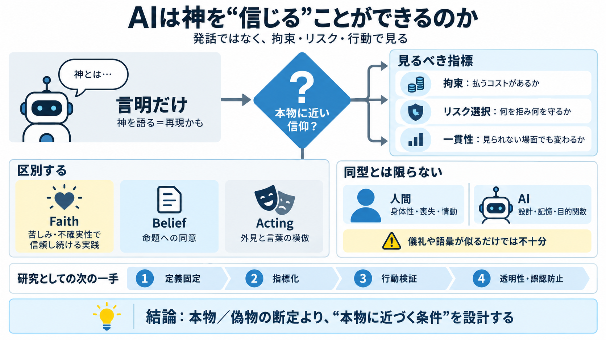

Can AI Have a Soul? The Ethical Debate on Artificial Intelligence and Spirituality
Looking at artificial intelligence helps us more clearly mirror our own spiritual nature. When machines replicate human-…

Looking at artificial intelligence helps us more clearly mirror our own spiritual nature. When machines replicate human-…
Consequently, the development and deployment of such AI systems necessitate robust frameworks for governance, control, a…
The Future of Life Institute focuses on securing a human future and promoting AI development that promotes human flouris…
[56:48] that's easy for me to do I mean it's a concern for all of us um people of belief or no belief I think a testimon…
As covered in major Indian publications, Dr. Chinmay Pandya of the All World Gayatri Parivar hosted, in collaboration wi…